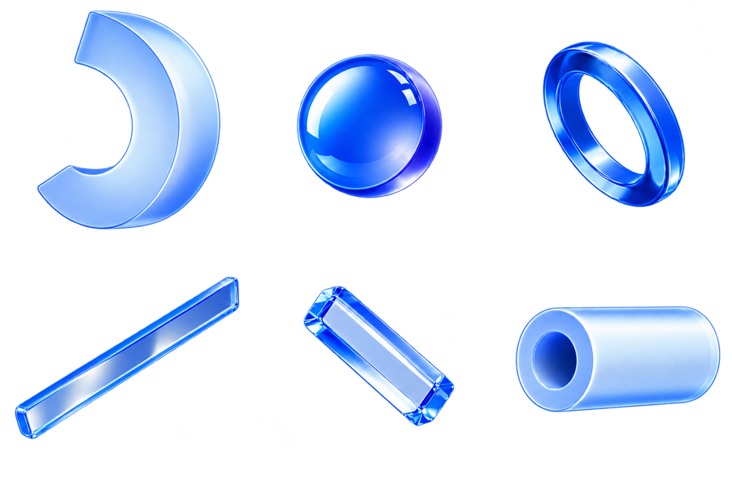

FOUNDATIONS / ILLUSTRATIONS
插画
蓝色透明玻璃的 3D 物件。只出现在引导、榜单、成就和主导航。
素材
几何组合横幅右侧 · glass-geometry.png分开的物件单独裁出使用 · glass-elements.png玻璃缎带导览、引导 · glass-ribbon.png蓝色奖杯成就、奖励 · trophy-glass.png金银铜奖杯等宽三格 · trophies-metals.png





背景都是透明的。点击下载单张。
在横幅里
- 1插画在右侧，可出血裁切，不超过卡片一半宽
- 2文字留在左侧，不压在插画上
榜单
第 1 名
第 2 名
第 3 名
前三名用 40 × 40 的玻璃奖杯，其余名次用数字。
空状态
空状态不用插画，用三张低保真预览卡片示意会出现的内容。
不要
生成的内容封面扁平插画、描边卡通人物、吉祥物emoji、剪贴画图库照片把第三方标志染蓝图片里放文字
内容封面只用真实配图；第三方标志保留原色。
给 AI 用
Prompt · 贴给任何 AI
请按 Nova Island 的插画规范使用插画。
风格：蓝色透明玻璃 / 水晶质感的 3D 抽象物件。半透明，有折射、斜面高光和柔和的内部光；颜色以 Nova 蓝（#0140FF 一族，从 #F2F5FF 到 #082A99）加白色磨砂为主，可带一点淡紫。背景透明，物件四周不带投影或只带极淡的影子。没有描边、没有扁平色块、没有卡通人物、没有文字。
插画只用在这四个地方：
| 位置 | 用什么 | 怎么放 |
| --- | --- | --- |
| 引导横幅（例如“30 天 AI 实践之旅”、功能导览卡） | 一个玻璃物件或一组几何体（assets 里的 glass-geometry、glass-elements、glass-ribbon） | 见下面“引导横幅” |
| 榜单前三名 | 玻璃奖杯：trophy-gold / trophy-silver / trophy-bronze（SVG） | 40 × 40，代替名次数字；外层写 role="img" aria-label="第 1 名"。第 4 名起显示数字（caption，--text-secondary），占同样 40 宽 |
| 成就、奖励 | 蓝色玻璃奖杯 trophy-glass | 成就卡按面板卡做（白底、圆角 24、内边距 24），奖杯 80 × 80 居中在上方，下面是名称（body-lg 600）和说明（small）；详情弹层里用 120 |
| 左侧主导航 | 玻璃导航图标（见图标模块） | 28 × 28 |
不用插画的地方：
- 内容封面（文章、课程、活动）：只用真实配图或作者上传的图；没有图时用纯文字卡片（颜色模块的 --article-surface-*），不生成封面。
- 空状态：用 3 张低保真预览卡片示意“这里会出现什么”：三张错开排列、中间一张在前；每张白底、--border-subtle 描边、圆角 24、内边距 24，里面是 32 的灰色圆形头像、高 7–10 的 full 圆角灰色线条（--surface-secondary）和一个 36 × 20 的灰色标签块（--surface-hover）。下面一句说明和一个按钮。不放单个图标，不放插画。
- 第三方产品标志（OpenAI、Claude 等）：用官方原色，不染成蓝色、不加玻璃效果。
- 不用 emoji、剪贴画、图库照片、卡通人物代替插画。
引导横幅：
- 横幅本身是一块蓝色玻璃面：底色从 --blue-500 到 --blue-400 的斜向渐变，圆角 24，内边距 32（≤1100px 24），最小高 212。这是插画面，不属于颜色模块里“蓝色只表示在哪里”的限制。
- 横幅里的文字全部白色：标题 title-lg（24 / 32，字重 600），说明 caption，按钮用黑色主按钮。
- 桌面：文字占左侧，插画放右侧，宽度不超过横幅的一半，可以从右上角出血被裁掉。
- ≤600px：插画移到右上角、宽 58%、透明度不变；文字放到横幅下半部分，横幅最小高 260，两者不重叠。
成就徽章：
- 已解锁：trophy-glass 原样显示。
- 未解锁：同一张图加 filter: grayscale(1); opacity: .4，名称旁放“未解锁”标签（--status-info-bg / --status-info）。
- 每个成就没有专属插画时都用 trophy-glass，靠名称区分；要做专属徽章，用下面的生图 Prompt 生成，先给用户确认。
空状态的具体做法（与产品一致）：
- 整块居中，上下留白 64。
- 预览区：最大宽 800，高 224，左右两端用 mask 渐隐。三张卡片宽 300，绝对定位在中线：中间一张 translateX(-50%)、z-index 2、描边 --border-default；左右两张 translateX(calc(-150% - 20px)) 和 translateX(calc(50% + 20px))，scale(.94)，opacity .38，模糊 1.5px，比中间低 20。
- 下面：标题 title-md（500），说明 small（--text-secondary），间距 12；再往下 24 放一个黑色大按钮（高 48）。
用法：
- 插画都是装饰：<img src="…" alt="" aria-hidden="true">，图片里不放文字，需要说的话写在页面上。
- 一个视区最多一个大插画（横幅、导览这一级）。榜单奖杯、成就卡里的奖杯、导航图标不算在内。同一页的多个引导卡片用同一组物件里的不同元素。
- 插画只占卡片的一角或一侧，最大不超过卡片宽度的一半。
- 深色模式下插画不变。
- 需要新插画时，用下面的“生图 Prompt”生成：徽章、奖杯生成 1024 × 1024 正方形，横幅插画生成 1536 × 1024；导出透明 PNG。生成后先给用户确认，不要直接上线。
生图 Prompt（英文，给图像模型用，替换 {subject}）：
A single {subject} as a sculptural 3D object made of clear blue glass and frosted crystal. Translucent material with soft internal glow, beveled edges, glossy highlights and gentle refraction. Color palette: Nova blue from pale #F2F5FF to deep #0140FF and #082A99, with milky white frosted areas and a slight lavender tint. Soft studio lighting from the top left. Isolated on a fully transparent background with true alpha, no backdrop, no cast shadow outside the silhouette. Clean, minimal, premium product-render look. No text, no letters, no numbers, no logos, no people, no faces, no cartoon style, no flat illustration, no outlines. Square canvas, the object centered with 8% margin, readable at 64px.
金银铜版本：在上面的 Prompt 后加 “Replace all blue with {metal}: gold #FFCC66 shaded #E6B85C / silver #D7DEE6 shaded #A3ADB9 / bronze #DCA16F shaded #B5794D, keep the same glass material.”
可以直接用的素材（assets/）：
- glass-geometry.png：月牙、玻璃球、圆环、棱柱、圆管组合在一起，适合横幅右侧
- glass-elements.png：同一组物件分开摆放，可以单独裁出使用
- glass-ribbon.png：淡紫蓝的玻璃缎带结，适合导览、引导
- trophy-glass.png：蓝色玻璃奖杯
- trophies-metals.png：金银铜三个奖杯并排（等宽三格）
- trophy-gold.svg、trophy-silver.svg、trophy-bronze.svg：榜单用的 40px 小奖杯（为小尺寸简化过，色值和生图 Prompt 里的金银铜不完全一样，这是有意的）
生图 Prompt · 替换 {subject}
A single {subject} as a sculptural 3D object made of clear blue glass and frosted crystal. Translucent material with soft internal glow, beveled edges, glossy highlights and gentle refraction. Color palette: Nova blue from pale #F2F5FF to deep #0140FF and #082A99, with milky white frosted areas and a slight lavender tint. Soft studio lighting from the top left. Isolated on a fully transparent background with true alpha, no backdrop, no cast shadow outside the silhouette. Clean, minimal, premium product-render look. No text, no letters, no numbers, no logos, no people, no faces, no cartoon style, no flat illustration, no outlines. Square canvas, the object centered with 8% margin, readable at 64px.
金银铜版本：在上面的 Prompt 后加 “Replace all blue with {metal}: gold #FFCC66 shaded #E6B85C / silver #D7DEE6 shaded #A3ADB9 / bronze #DCA16F shaded #B5794D, keep the same glass material.”素材下载素材包5 张透明 PNG、3 个奖杯 SVG
检查下载 check-illus.py检查页面和生图 Prompt
Skill下载 Skill含文字、颜色、尺寸、图标、插画五个模块
安装 Skill
unzip nova-design-skill.zip -d ~/.claude/skills/